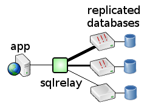

Solves - "I wish there was a cheap and easy way to distribute traffic to the nodes in my database cluster."
Load balancing distributes queries over a pool of servers to aid in scaling.
For example, if you have a database cluster or set of replicated servers, then SQL Relay can be configured to distribute queries over them.
|
|
Weight metrics can be assigned as well. If some of the database machines are more powerful than others, load can be dispoportionally distributed to them and away from the less powerful database servers.
Note that SQL Relay cannot currently be used to replicate databases or keep replicated databases synchronized. If you are using SQL Relay to access replicated databases then it is assumed that there is some means by which the databases are kept synchronized external to SQL Relay.
A complete description of load balancing with example configuration files is given here.